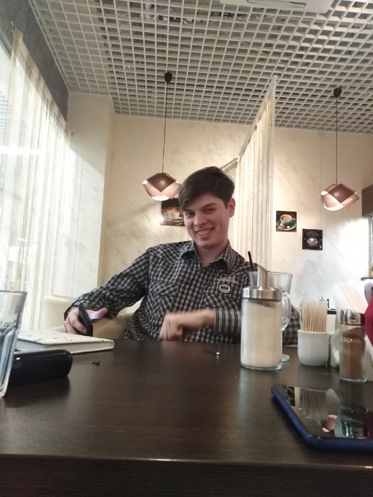

Ходы кривие роет падзэмный умный гном, нармалные герои всегда идут кругом.
― Гиви Зурабович Церетели. Властелин колец (в переводе Гоблина)
Ходы кривие роет падзэмный умный гном, нармалные герои всегда идут кругом.
― Гиви Зурабович Церетели. Властелин колец (в переводе Гоблина)
Я родом из далёких Оренбургских краёв. Учился в городской школе.
С 1 по 9 класс обучался в Гимназии №1 г.Бузулука
После 9 перешёл в другую школу, где и закончил обучения, после поступил на ПС
Почему ПС? Сказали что пройду по баллам, вот и всё
Мое хобби
Ооо, так просто не сказать, я занимаюсь всем что мне нравится
Есть вопрос? ПРоходи, не задерживайся! →